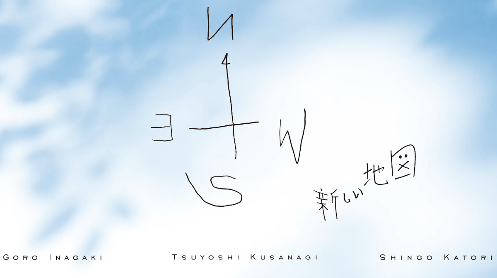

今さら聞けない「新しい地図」とは？活動内容・魅力・ファンとの絆まで徹底解説
投稿日：2025年6月10日
「新しい地図」は、元SMAPの3人—稲垣吾郎・草彅剛・香取慎吾—が2017年に立ち上げたプロジェクトです。 今回は、「聞いたことはあるけどよく知らない」「最近気になってきた」という方のために、活動の概要・メンバーの特徴・ファンとの関係性まで、詳しくご紹介します。
🧭 「新しい地図」とは？
2016年末に国民的グループSMAPが解散し、3人のメンバーがジャニーズ事務所を離れたのは大きな話題となりました。 その翌年にスタートしたのが「新しい地図」です。 所属は株式会社CULEN（カレン）。芸能事務所というより、彼らの活動を支援するプロデュース会社のような位置づけです。
「地図がないなら、僕らで作ろうと思った」― 公式サイトより
👤 メンバー紹介

- 稲垣吾郎(中央)：インテリ系の俳優として評価され、舞台や映画だけでなくエッセイやナレーションでも活躍。
- 草彅剛(左)：2021年の映画『ミッドナイトスワン』ではトランスジェンダー役を演じ、日本アカデミー賞で主演男優賞を受賞。
- 香取慎吾(右)：アート活動に力を入れ、個展「WHO AM I」を全国で開催。音楽やファッションにも関心が深く、多彩な才能を発揮。
📡 活動内容とその特徴
新しい地図の活動は非常に多岐にわたります：
- 映画・舞台・テレビ出演
- アート展、香取慎吾の個展やライブペイント
- 音楽活動（ソロ曲・コラボなど）
- YouTubeやSNSを活用したファン向け発信
- 社会貢献（被災地支援、パラスポーツ応援など）
🤝 ファンとの関係性 ―「NAKAMA」制度
ファンクラブ名は「NAKAMA（仲間）」。ただの“ファン”ではなく、一緒に旅をする仲間という考え方が基盤です。 会員向けの限定コンテンツやイベント、ファンと一緒に創る企画など、従来のアイドルファンクラブとは一線を画しています。
🌈 新しい地図が支持される理由
- 旧体制から独立し、自由な芸能活動を実現している
- 年齢を重ねたからこそ出せる表現力
- ファンとの“対等な関係性”を大切にしている
- 社会への姿勢（SDGs的な視点や多様性への配慮）
📝 まとめ
「新しい地図」は単なる芸能活動の枠を超えて、現代的なライフスタイルや価値観を体現する存在です。 「今さら聞けない」なんて遠慮は不要。今こそ、彼らが描く“新しい地図”に触れてみましょう。
▼関連リンク（任意で追加）
公式サイトはこちら